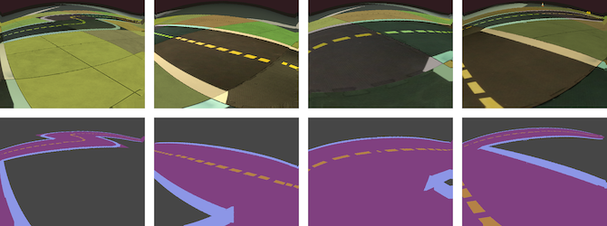

I am a research intern at Uber Advanced Technologies Group.
I spend my days advancing self-driving technology. 🚗
Previously, I have interned with Google LA and with Google Zurich.
 Explored domain randomization for the road segmentation model transfer from a simulator to the real world. Paper is coming up!
I was at the top 10% and won a silver medal at The International Olympiad in Informatics.